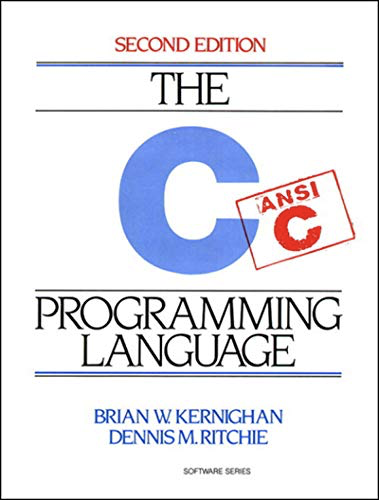

- 00 开篇词 这样入门Go，才能少走弯路.md.html
- 01 前世今生：你不得不了解的Go的历史和现状.md.html
- 02 拒绝“Hello and Bye”：Go语言的设计哲学是怎么一回事？.md.html
- 03 配好环境：选择一种最适合你的Go安装方法.md.html
- 04 初窥门径：一个Go程序的结构是怎样的？.md.html
- 05 标准先行：Go项目的布局标准是什么？.md.html
- 06 构建模式：Go是怎么解决包依赖管理问题的？.md.html
- 07 构建模式：Go Module的6类常规操作.md.html
- 08 入口函数与包初始化：搞清Go程序的执行次序.md.html
- 09 即学即练：构建一个Web服务就是这么简单.md.html
- 10 变量声明：静态语言有别于动态语言的重要特征.md.html
- 11 代码块与作用域：如何保证变量不会被遮蔽？.md.html
- 12 基本数据类型：Go原生支持的数值类型有哪些？.md.html
- 13 基本数据类型：为什么Go要原生支持字符串类型？.md.html
- 14 常量：Go在“常量”设计上的创新有哪些？.md.html
- 15 同构复合类型：从定长数组到变长切片.md.html
- 16 复合数据类型：原生map类型的实现机制是怎样的？.md.html
- 17 复合数据类型：用结构体建立对真实世界的抽象.md.html
- 18 控制结构：if的“快乐路径”原则.md.html
- 19 控制结构：Go的for循环，仅此一种.md.html
- 20 控制结构：Go中的switch语句有哪些变化？.md.html
- 21 函数：请叫我“一等公民”.md.html
- 22 函数：怎么结合多返回值进行错误处理？.md.html
- 23 函数：怎么让函数更简洁健壮？.md.html
- 24 方法：理解“方法”的本质.md.html
- 25 方法：方法集合与如何选择receiver类型？.md.html
- 26 方法：如何用类型嵌入模拟实现“继承”？.md.html
- 27 即学即练：跟踪函数调用链，理解代码更直观.md.html
- 28 接口：接口即契约.md.html
- 29 接口：为什么nil接口不等于nil？.md.html
- 30 接口：Go中最强大的魔法.md.html
- 31 并发：Go的并发方案实现方案是怎样的？.md.html
- 32 并发：聊聊Goroutine调度器的原理.md.html
- 33 并发：小channel中蕴含大智慧.md.html
- 34 并发：如何使用共享变量？.md.html
- 35 即学即练：如何实现一个轻量级线程池？.md.html
- 36 打稳根基：怎么实现一个TCP服务器？（上）.md.html
- 37 代码操练：怎么实现一个TCP服务器？（中）.md.html
- 38 成果优化：怎么实现一个TCP服务器？（下）.md.html
- 39 驯服泛型：了解类型参数.md.html
- 40 驯服泛型：定义泛型约束.md.html
- 41 驯服泛型：明确使用时机.md.html
- 元旦快乐 这是一份暂时停更的声明.md.html
- 加餐 作为Go Module的作者，你应该知道的几件事.md.html
- 加餐 如何拉取私有的Go Module？.md.html
- 加餐 我“私藏”的那些优质且权威的Go语言学习资料.md.html
- 加餐 聊聊Go 1.17版本的那些新特性.md.html
- 加餐 聊聊Go语言的指针.md.html
- 加餐 聊聊最近大热的Go泛型.md.html
- 大咖助阵 叶剑峰：Go语言中常用的那些代码优化点.md.html
- 大咖助阵 大明：Go泛型，泛了，但没有完全泛.md.html
- 大咖助阵 孔令飞：从小白到“老鸟”，我的Go语言进阶之路.md.html
- 大咖助阵 徐祥曦：从销售到分布式存储工程师，我与 Go 的故事.md.html
- 大咖助阵 曹春晖：聊聊 Go 语言的 GC 实现.md.html
- 大咖助阵 海纳：聊聊语言中的类型系统与泛型.md.html
- 期中测试 一起检验下你的学习成果吧.md.html
- 用户故事 罗杰：我的Go语言学习之路.md.html
- 结束语 和你一起迎接Go的黄金十年.md.html
- 结课测试 快来检验下你的学习成果吧！.md.html
- 捐赠
04 初窥门径：一个Go程序的结构是怎样的？
你好，我是Tony Bai。
经过上一讲的学习，我想现在你已经成功安装好至少一个Go开发环境了，是时候撸起袖子开始写Go代码了！
程序员这个历史并不算悠久的行当，却有着一个历史悠久的传统，那就是每种编程语言都将一个名为“hello, world”的示例作为这门语言学习的第一个例子，这个传统始于20世纪70年代那本大名鼎鼎的由布莱恩·科尼根（Brian W. Kernighan）与C语言之父丹尼斯·里奇（Dennis M. Ritchie）合著的《C程序设计语言》。

在这一讲中，我们也将遵从传统，从编写一个可以打印出“hello, world”的Go示例程序开始我们正式的Go编码之旅。我希望通过这个示例程序你能够对Go程序结构有一个直观且清晰的认识。
在正式开始之前，我要说明一下，我们这节课对你开发Go程序时所使用的编辑器工具没有任何具体的要求。
如果你喜欢使用某个集成开发环境（Integrated Development Environment，IDE），那么就用你喜欢的IDE好了。如果你希望我给你推荐一些好用的IDE，我建议你试试GoLand或Visual Studio Code（简称VS Code）。GoLand是知名IDE出品公司JetBrains针对Go语言推出的IDE产品，也是目前市面上最好用的Go IDE；VS Code则是微软开源的跨语言源码编辑器，通过集成语言插件（Go开发者可以使用Go官方维护的vscode-go插件），可以让它变成类IDE的工具。
如果你有黑客情怀，喜欢像黑客一样优雅高效地使用命令行，那么像Vim、Emacs这样的基于终端的编辑器同样可以用于编写Go源码。以Vim为例，结合vim-go、coc.nvim（代码补全）以及Go官方维护的gopls语言服务器，你在编写Go代码时同样可以体会到“飞一般”的感觉。但在我们这门课中，我们将尽量使用与编辑器或IDE无关的说明。
好，我们正式开始吧。
创建“hello，world”示例程序
在Go语言中编写一个可以打印出“hello，world”的示例程序，我们只需要简单两步，一是创建文件夹，二是开始编写和运行。首先，我们来创建一个文件夹存储编写的Go代码。
创建“hello，world”文件夹
通常来说，Go不会限制我们存储代码的位置（Go 1.11之前的版本另当别论）。但是针对我们这门课里的各种练习和项目，我还是建议你创建一个可以集合所有项目的根文件夹（比如：~/goprojects），然后将我们这门课中所有的项目都放在里面。
现在，你可以打开终端并输入相应命令，来创建我们用于储存“hello，world”示例的文件夹helloworld了。对于Linux系统、macOS系统，以及Windows系统的PowerShell终端来说，用下面这个命令就可以建立helloworld文件夹了：
$mkdir ~/goprojects // 创建一个可以集合所有专栏项目的根文件夹
$cd ~/goprojects
$mkdir helloworld // 创建存储helloworld示例的文件夹
$cd helloworld
建好文件夹后，我们就要开始编写我们第一个Go程序了。
编写并运行第一个Go程序
首先，我们需要创建一个名为main.go的源文件。
这里，我需要跟你啰嗦一下Go的命名规则。Go源文件总是用全小写字母形式的短小单词命名，并且以.go扩展名结尾。
如果要在源文件的名字中使用多个单词，我们通常直接是将多个单词连接起来作为源文件名，而不是使用其他分隔符，比如下划线。也就是说，我们通常使用helloworld.go作为文件名而不是hello_world.go。
这是因为下划线这种分隔符，在Go源文件命名中有特殊作用，这个我们会在以后的讲解中详细说明。总的来说，我们尽量不要用两个以上的单词组合作为文件名，否则就很难分辨了。
现在，你可以打开刚刚创建的main.go文件，键入下面这些代码：
package main
import "fmt"
func main() {
fmt.Println("hello, world")
}
写完后，我们保存文件并回到终端窗口，然后在Linux或macOS系统中，你就可以通过输入下面这个命令来编译和运行这个文件了：
$go build main.go
$./main
hello, world
如果是在Windows系统中呢，你需要把上面命令中的./main替换为.\main.exe。
>go build main.go
>.\main.exe
hello, world
不过，无论你使用哪种操作系统，到这里你都应该能看到终端输出的“hello, world”字符串了。如果你没有看到这个输出结果，要么是Go安装过程的问题，要么是源文件编辑出现了问题，需要你再次认真地确认。如果一切顺利，那么恭喜你！你已经完成了第一个Go程序，并正式成为了Go开发者！欢迎来到Go语言的世界！
“hello，world”示例程序的结构
现在，让我们回过头来仔细看看“hello，world”示例程序中到底发生了什么。第一个值得注意的部分是这个：
package main
这一行代码定义了Go中的一个包package。包是Go语言的基本组成单元，通常使用单个的小写单词命名，一个Go程序本质上就是一组包的集合。所有Go代码都有自己隶属的包，在这里我们的“hello，world”示例的所有代码都在一个名为main的包中。main包在Go中是一个特殊的包，整个Go程序中仅允许存在一个名为main的包。
main包中的主要代码是一个名为main的函数：
func main() {
fmt.Println("hello, world")
}
这里的main函数会比较特殊：当你运行一个可执行的Go程序的时候，所有的代码都会从这个入口函数开始运行。这段代码的第一行声明了一个名为main的、没有任何参数和返回值的函数。如果某天你需要给函数声明参数的话，那么就必须把它们放置在圆括号()中。
另外，那对花括号{}被用来标记函数体，Go要求所有的函数体都要被花括号包裹起来。按照惯例，我们推荐把左花括号与函数声明置于同一行并以空格分隔。Go语言内置了一套Go社区约定俗称的代码风格，并随安装包提供了一个名为Gofmt的工具，这个工具可以帮助你将代码自动格式化为约定的风格。
Gofmt是Go语言在解决规模化（scale）问题上的一个最佳实践，并成为了Go语言吸引其他语言开发者的一大卖点。很多其他主流语言也在效仿Go语言推出自己的format工具，比如：Java formatter、Clang formatter、Dartfmt等。因此，作为Go开发人员，请在提交你的代码前使用Gofmt格式化你的Go源码。
好，回到正题，我们再来看一看main函数体中的代码：
fmt.Println("hello, world")
这一行代码已经完成了整个示例程序的所有工作了：将字符串输出到终端的标准输出（stdout）上。不过这里还有几个需要你注意的细节。
注意点1：标准Go代码风格使用Tab而不是空格来实现缩进的，当然这个代码风格的格式化工作也可以交由gofmt完成。
注意点2：我们调用了一个名为Println的函数，这个函数位于Go标准库的fmt包中。为了在我们的示例程序中使用fmt包定义的Println函数，我们其实做了两步操作。
第一步是在源文件的开始处通过import声明导入fmt包的包路径：
import "fmt"
第二步则是在main函数体中，通过fmt这个限定标识符（Qualified Identifier）调用Println函数。虽然两处都使用了“fmt”这个字面值，但在这两处“fmt”字面值所代表的含义却是不一样的：
- import “fmt” 一行中“fmt”代表的是包的导入路径（Import），它表示的是标准库下的fmt目录，整个import声明语句的含义是导入标准库fmt目录下的包；
- fmt.Println函数调用一行中的“fmt”代表的则是包名。
通常导入路径的最后一个分段名与包名是相同的，这也很容易让人误解import声明语句中的“fmt”指的是包名，其实并不是这样的。
main函数体中之所以可以调用fmt包的Println函数，还有最后一个原因，那就是Println函数名的首字母是大写的。在Go语言中，只有首字母为大写的标识符才是导出的（Exported），才能对包外的代码可见；如果首字母是小写的，那么就说明这个标识符仅限于在声明它的包内可见。
另外，在Go语言中，main包是不可以像标准库fmt包那样被导入（Import）的，如果导入main包，在代码编译阶段你会收到一个Go编译器错误：import “xx/main” is a program, not an importable package。
注意点3：我们还是回到main函数体实现上，把关注点放在传入到Println函数的字符串“hello, world”上面。你会发现，我们传入的字符串也就是我们执行程序后在终端的标准输出上看到的字符串。
这种“所见即所得”得益于Go源码文件本身采用的是Unicode字符集，而且用的是UTF-8标准的字符编码方式，这与编译后的程序所运行的环境所使用的字符集和字符编码方式是一致的。
这里，即便我们将代码中的”hello, world”换成中文字符串“你好，世界”，像下面这样：
package main
import "fmt"
func main() {
fmt.Println("你好，世界")
}
我们依旧可以在终端的标准输出上看到正确的输出。
最后，不知道你有没有发现，我们整个示例程序源码中，都没有使用过分号来标识语句的结束，这与C、C++、Java那些传统编译型语言好像不太一样呀？
不过，其实Go语言的正式语法规范是使用分号“;”来做结尾标识符的。那为什么我们很少在Go代码中使用和看到分号呢？这是因为，大多数分号都是可选的，常常被省略，不过在源码编译时，Go编译器会自动插入这些被省略的分号。
我们给上面的“hello，world”示例程序加上分号也是完全合法的，是可以直接通过Go编译器编译并正常运行的。不过，gofmt在按约定格式化代码时，会自动删除这些被我们手工加入的分号的。
在分析完这段代码结构后，我们来讲一下Go语言的编译。虽然刚刚你应该已经运行过“hello, world”这个示例程序了，在这过程中，有一个重要的步骤——编译，现在我就带你来看看Go语言中程序是怎么进行编译的。
Go语言中程序是怎么编译的？
你应该也注意到了，刚刚我在运行”hello, world”程序之前，输入了go build命令，还有它附带的源文件名参数来编译它：
$go build main.go
假如你曾经有过C/C++语言的开发背景，那么你就会发现这个步骤与gcc或clang编译十分相似。一旦编译成功，我们就会获得一个二进制的可执行文件。在Linux系统、macOS系统，以及Windows系统的PowerShell中，我们可以通过输入下面这个ls命令看到刚刚生成的可执行文件：
$ls
main* main.go
上面显示的文件里面有我们刚刚创建的、以.go为后缀的源代码文件，还有刚生成的可执行文件（Windows系统下为main.exe，其余系统下为main）。
如果你之前更熟悉某种类似于Ruby、Python或JavaScript之类的动态语言，你可能还不太习惯在运行之前需要先进行编译的情况。Go是一种编译型语言，这意味着只有你编译完Go程序之后，才可以将生成的可执行文件交付于其他人，并运行在没有安装Go的环境中。
而如果你交付给其他人的是一份.rb、.py或.js的动态语言的源文件，那么他们的目标环境中就必须要拥有对应的Ruby、Python或JavaScript实现才能解释执行这些源文件。
当然，Go也借鉴了动态语言的一些对开发者体验较好的特性，比如基于源码文件的直接执行，Go提供了run命令可以直接运行Go源码文件，比如我们也可以使用下面命令直接基于main.go运行：
$go run main.go
hello, world
当然像go run这类命令更多用于开发调试阶段，真正的交付成果还是需要使用go build命令构建的。
但是在我们的生产环境里，Go程序的编译往往不会像我们前面，基于单个Go源文件构建类似“hello，world”这样的示例程序那么简单。越贴近真实的生产环境，也就意味着项目规模越大、协同人员越多，项目的依赖和依赖的版本都会变得复杂。
那在我们更复杂的生产环境中，go build命令也能圆满完成我们的编译任务吗？我们现在就来探讨一下。
复杂项目下Go程序的编译是怎样的
我们还是直接上项目吧，给go build 一个机会，看看它的复杂依赖管理到底怎么样。
现在我们创建一个新项目“hellomodule”，在新项目中我们将使用两个第三方库，zap和fasthttp，给go build的构建过程增加一些难度。和“hello，world”示例一样，我们通过下面命令创建“hellomodule”项目：
$cd ~/goprojects
$mkdir hellomodule
$cd hellomodule
接着，我们在“hellomodule“下创建并编辑我们的示例源码文件：
package main
import (
"github.com/valyala/fasthttp"
"go.uber.org/zap"
)
var logger *zap.Logger
func init() {
logger, _ = zap.NewProduction()
}
func fastHTTPHandler(ctx *fasthttp.RequestCtx) {
logger.Info("hello, go module", zap.ByteString("uri", ctx.RequestURI()))
}
func main() {
fasthttp.ListenAndServe(":8081", fastHTTPHandler)
}
这个示例创建了一个在8081端口监听的http服务，当我们向它发起请求后，这个服务会在终端标准输出上输出一段访问日志。
你会看到，和“hello，world“相比，这个示例显然要复杂许多。但不用担心，你现在大可不必知道每行代码的功用，你只需要我们在这个稍微有点复杂的示例中引入了两个第三方依赖库，zap和fasthttp就可以了。
我们尝试一下使用编译“hello，world”的方法来编译“hellomodule”中的main.go源文件，go编译器的输出结果是这样的：
$go build main.go
main.go:4:2: no required module provides package github.com/valyala/fasthttp: go.mod file not found in current directory or any parent directory; see 'go help modules'
main.go:5:2: no required module provides package go.uber.org/zap: go.mod file not found in current directory or any parent directory; see 'go help modules'
看这结果，这回我们运气似乎不佳，main.go的编译失败了！
从编译器的输出来看，go build似乎在找一个名为go.mod的文件，来解决程序对第三方包的依赖决策问题。
好了，我们也不打哑谜了，是时候让Go module登场了！
Go module构建模式是在Go 1.11版本正式引入的，为的是彻底解决Go项目复杂版本依赖的问题，在Go 1.16版本中，Go module已经成为了Go默认的包依赖管理机制和Go源码构建机制。
Go Module的核心是一个名为go.mod的文件，在这个文件中存储了这个module对第三方依赖的全部信息。接下来，我们就通过下面命令为“hello，module”这个示例程序添加go.mod文件：
$go mod init github.com/bigwhite/hellomodule
go: creating new go.mod: module github.com/bigwhite/hellomodule
go: to add module requirements and sums:
go mod tidy
你会看到，go mod init命令的执行结果是在当前目录下生成了一个go.mod文件：
$cat go.mod
module github.com/bigwhite/hellomodule
go 1.16
其实，一个module就是一个包的集合，这些包和module一起打版本、发布和分发。go.mod所在的目录被我们称为它声明的module的根目录。
不过呢，这个时候的go.mod文件内容还比较简单，第一行内容是用于声明module路径（module path）的。而且，module隐含了一个命名空间的概念，module下每个包的导入路径都是由module path和包所在子目录的名字结合在一起构成。
比如，如果hellomodule下有子目录pkg/pkg1，那么pkg1下面的包的导入路径就是由module path（github.com/bigwhite/hellomodule）和包所在子目录的名字（pkg/pkg1）结合而成，也就是github.com/bigwhite/hellomodule/pkg/pkg1。
另外，go.mod的最后一行是一个Go版本指示符，用于表示这个module是在某个特定的Go版本的module语义的基础上编写的。
有了go.mod后，是不是我们就可以构建hellomodule示例了呢？
来试试看！我们执行一下构建，Go编译器输出结果是这样的：
$go build main.go
main.go:4:2: no required module provides package github.com/valyala/fasthttp; to add it:
go get github.com/valyala/fasthttp
main.go:5:2: no required module provides package go.uber.org/zap; to add it:
go get go.uber.org/zap
你会看到，Go编译器提示源码依赖fasthttp和zap两个第三方包，但是go.mod中没有这两个包的版本信息，我们需要按提示手工添加信息到go.mod中。
这个时候，除了按提示手动添加外，我们也可以使用go mod tidy命令，让Go工具自动添加：
$go mod tidy
go: downloading go.uber.org/zap v1.18.1
go: downloading github.com/valyala/fasthttp v1.28.0
go: downloading github.com/andybalholm/brotli v1.0.2
... ...
从输出结果中，我们看到Go工具不仅下载并添加了hellomodule直接依赖的zap和fasthttp包的信息，还下载了这两个包的相关依赖包。go mod tidy执行后，我们go.mod的最新内容变成了这个样子：
module github.com/bigwhite/hellomodule
go 1.16
require (
github.com/valyala/fasthttp v1.28.0
go.uber.org/zap v1.18.1
)
这个时候，go.mod已经记录了hellomodule直接依赖的包的信息。不仅如此，hellomodule目录下还多了一个名为go.sum的文件，这个文件记录了hellomodule的直接依赖和间接依赖包的相关版本的hash值，用来校验本地包的真实性。在构建的时候，如果本地依赖包的hash值与go.sum文件中记录的不一致，就会被拒绝构建。
有了go.mod以及hellomodule依赖的包版本信息后，我们再来执行构建：
$go build main.go
$ls
go.mod go.sum main* main.go
这次我们成功构建出了可执行文件main，运行这个文件，新开一个终端窗口，在新窗口中使用curl命令访问该http服务：curl localhost:8081/foo/bar，我们就会看到服务端输出如下日志：
$./main
{"level":"info","ts":1626614126.9899719,"caller":"hellomodule/main.go:15","msg":"hello, go module","uri":"/foo/bar"}
这下，我们的“ hellomodule”程序可算创建成功了。我们也看到使用Go Module的构建模式，go build完全可以承担其构建规模较大、依赖复杂的Go项目的重任。还有更多关于Go Module的内容，我会在第7节课再详细跟你讲解。
小结
到这里，我们终于亲手编写完成了Go语言的第一个程序“hello, world”，我们终于知道一个Go程序长成啥样子了，这让我们在自己的Go旅程上迈出了坚实的一步！
在这一节课里，我们通过helloworld示例程序，了解了一个Go程序的源码结构与代码风格自动格式化的约定。
我希望你记住这几个要点：
- Go包是Go语言的基本组成单元。一个Go程序就是一组包的集合，所有Go代码都位于包中；
- Go源码可以导入其他Go包，并使用其中的导出语法元素，包括类型、变量、函数、方法等，而且，main函数是整个Go应用的入口函数；
- Go源码需要先编译，再分发和运行。如果是单Go源文件的情况，我们可以直接使用go build命令+Go源文件名的方式编译。不过，对于复杂的Go项目，我们需要在Go Module的帮助下完成项目的构建。
最后，我们结合hellomodule示例初步学习了一个基于Go Module构建模式编写和构建更大规模Go程序的步骤并介绍了Go Module涉及到的各种概念。而且，Go Module机制日渐成熟，我希望你学会基于Go Module构建Go应用。关于Go Module构建模式，我们还会在后面的讲解中详细介绍。
思考题
今天我给你留了一道思考题，经过今天这节课，你喜欢Go统一的代码风格吗？你觉得Go这么做的利弊都有哪些呢？欢迎在留言区和我探讨。
欢迎你把这节课分享给更多对Go语言学习感兴趣的朋友。我是Tony Bai，我们下节课见。
© 2019 - 2023 Liangliang Lee. Powered by gin and hexo-theme-book.